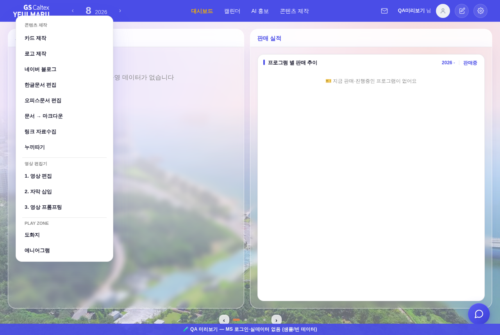
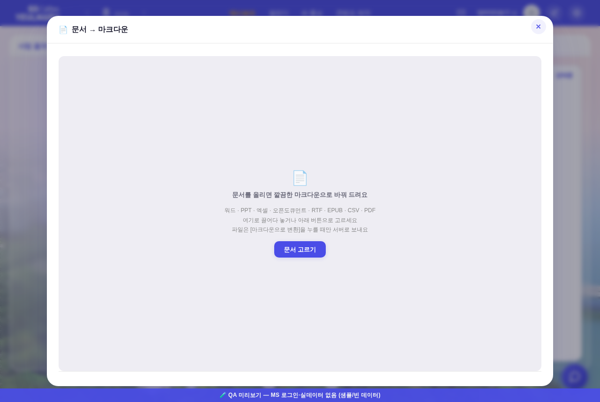
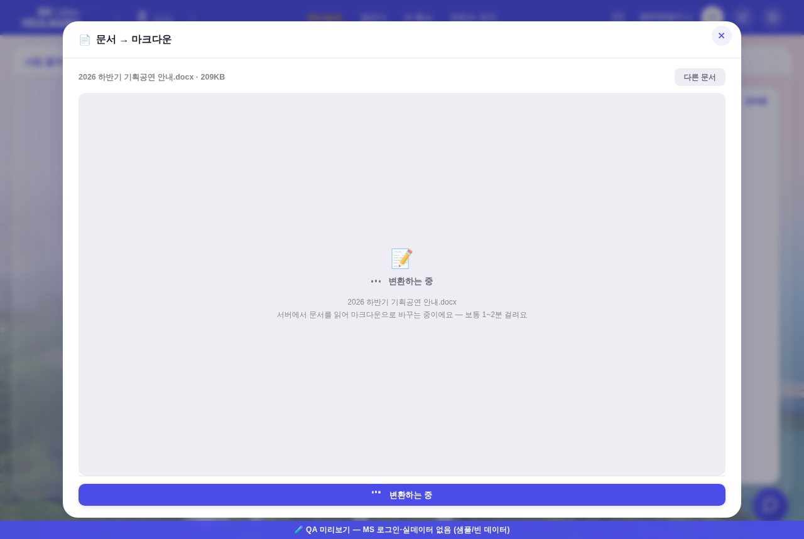
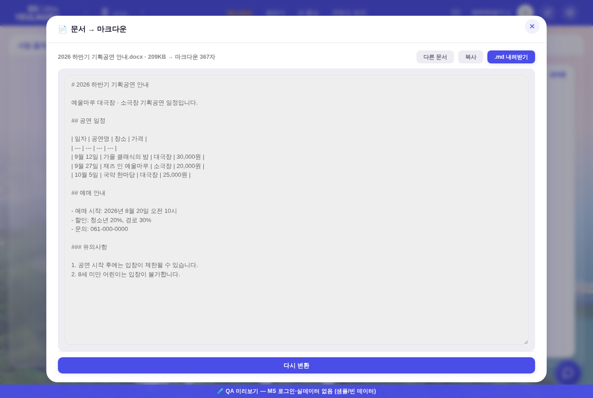
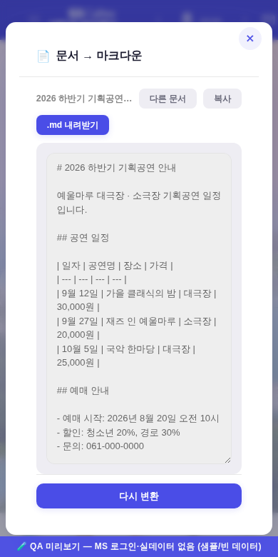

콘텐츠 제작 ▸ 문서 → 마크다운 260805
firecrawl/anydoc(MIT) 도입 — 워드·PPT·엑셀·오픈도큐먼트·RTF·EPUB·CSV·PDF 21종 → GFM 마크다운.
화면은 헤드리스 실측(1280×860 · 좁은 폭 390px · tools/smoke_layout.mjs 하네스 재사용 · pageerror 0).
① 진입점 — 「콘텐츠 제작」 드롭다운
전 = 손대기 전 화면 / 후 = 「오피스문서 편집」 바로 아래 한 줄 추가(그 외 항목·순서 무변).

후 — 카드 제작 · 로고 제작 · 네이버 블로그 · 한글문서 편집 · 오피스문서 편집 · 문서 → 마크다운 · 링크 자료수집 · 누끼따기
② 화면 4단계 — 오피스문서 편집 셸 그대로(신규 CSS·색·컴포넌트 0)
부품 = .modal/.modal-x · .hw-bar/.hw-stage/.hw-ask · .u-empty · .btn · 결과면 .nb-out.

1. 빈 상태 — 끌어다 놓기 / 고르기 · 「[마크다운으로 변환]을 누를 때만 서버로」 고지
2. 문서 올림 — 파일 카드(미리보기 없음 = 오피스문서 편집과 같은 판단)

3. 변환 중 — 러너 왕복(보통 1~2분 안내 · 실제 40~90초)

4. 결과 — .nb-out에 마크다운 전문 + [복사] · [.md 내려받기] · [다시 변환]
③ 좁은 폭(390px)
도구줄은 .hw-bar flex-wrap, 하단 버튼은 .hw-ask 760px 미디어쿼리로 전폭 — 둘 다 기존 규칙이 그대로 먹는다.

④ 기하 실측 — 넘침 0
- 모달 34–826 (뷰포트 860) · 무대 148–759 · 결과면 162–745 = 무대 안선(패딩 14) 안 · 하단 버튼 759–807
- pageerror 0 · check_design 1578/1578 무변 · check_refs ✓ · check_wiring ✓ · build_annual_yr PASS
⑤ 왜 서버 왕복인가 (온디바이스 불가 · 실측)
- npm
@firecrawl/anydoc = 플랫폼별 네이티브 NAPI 바이너리(.node) optionalDependencies 7종 + engines: node>=20 — WASM·브라우저 빌드가 없다.
- 그래서 누끼따기(온디바이스)가 아니라 오피스문서 편집과 같은 Actions 왕복: upload → dispatch(
anydoc-convert) → drafts/anydoc/<id>.out.md → 폴링 → 수령.
- AI 미사용 — 이 앱 도구 중 유일하게
claude -p·OAuth 체인을 안 태운다(npx 한 줄). 시크릿 신설 0(GITHUB_PAT만).
- 데이터 위생 = 오피스와 동일: 원본 즉시 삭제 · 잔재 원본 1시간/결과 3일 자동 회수 · 닫으면 상태 전멸(공용 PC).